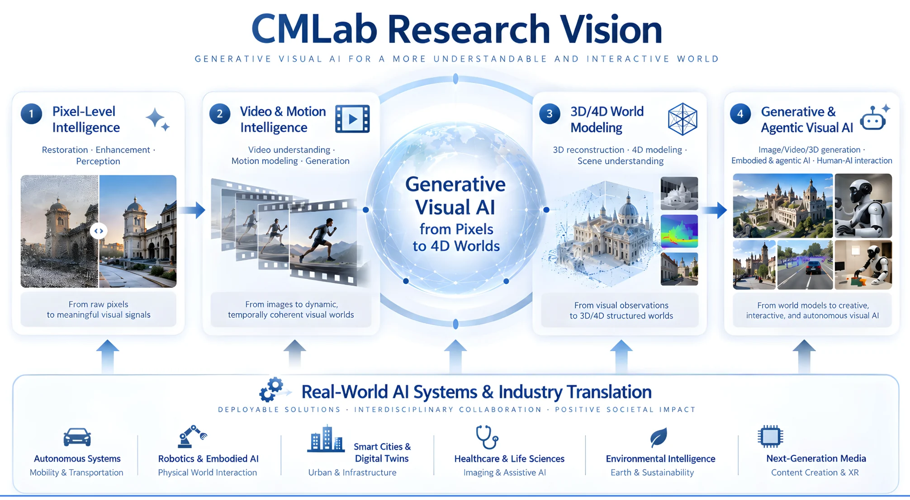

01 /RESTORE
Pixel-Level Intelligence
From corrupted pixels to meaningful visual detail.
Restoration · Super-resolution · Deblurring · Enhancement
Four connected directions taking us from low-level signals to dynamic, intelligent worlds.
From corrupted pixels to meaningful visual detail.
From isolated frames to temporally coherent motion.
From image observations to structured spatial and dynamic worlds.
From visual synthesis to controllable and interactive intelligence.

OPEN FULL-SIZE DIAGRAM ↗